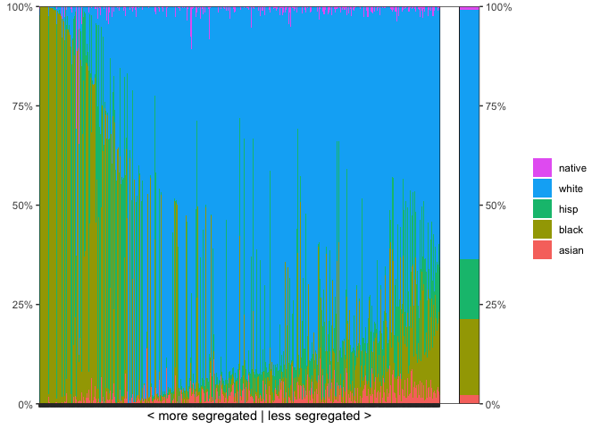

An R package to calculate, visualize, and decompose various segregation indices. The package currently supports
- the Mutual Information Index (M),
- Theil’s Information Index (H),
- the index of Dissimilarity (D),
- the isolation and exposure index.
Find more information in vignette("segregation") and the documentation.
The package also supports
- standard error and confidence intervals estimation via bootstrapping, which also corrects for small sample bias
- decomposition of the M and H indices (within/between, local segregation)
- decomposing differences in total segregation over time (Elbers 2020)
- segregation visualizations (segregation curves and ‘segplots’)
Most methods return tidy data.tables for easy post-processing and plotting. For speed, the package uses the data.table package internally, and implements some functions in C++.
Most of the procedures implemented in this package are described in more detail in this SMR paper (Preprint) and in this working paper.
Usage
The package provides an easy way to calculate segregation measures, based on the Mutual Information Index (M) and Theil’s Entropy Index (H).
library(segregation)
# example dataset with fake data provided by the package
mutual_total(schools00, "race", "school", weight = "n")
#> stat est
#> <char> <num>
#> 1: M 0.426
#> 2: H 0.419Standard errors in all functions can be estimated via boostrapping. This will also apply bias-correction to the estimates:
mutual_total(schools00, "race", "school",
weight = "n",
se = TRUE, CI = 0.90, n_bootstrap = 500
)
#> 500 bootstrap iterations on 877739 observations
#> stat est se CI bias
#> <char> <num> <num> <list> <num>
#> 1: M 0.422 0.000775 0.421,0.423 0.00361
#> 2: H 0.415 0.000712 0.414,0.416 0.00356Decompose segregation into a between-state and a within-state term (the sum of these equals total segregation):
# between states
mutual_total(schools00, "race", "state", weight = "n")
#> stat est
#> <char> <num>
#> 1: M 0.0992
#> 2: H 0.0977
# within states
mutual_total(schools00, "race", "school", within = "state", weight = "n")
#> stat est
#> <char> <num>
#> 1: M 0.326
#> 2: H 0.321Local segregation (ls) is a decomposition by units or groups (here racial groups). This function also support standard error and CI estimation. The sum of the proportion-weighted local segregation scores equals M:
local <- mutual_local(schools00,
group = "school", unit = "race", weight = "n",
se = TRUE, CI = 0.90, n_bootstrap = 500, wide = TRUE
)
#> 500 bootstrap iterations on 877739 observations
local[, c("race", "ls", "p", "ls_CI")]
#> race ls p ls_CI
#> <fctr> <num> <num> <list>
#> 1: asian 0.591 0.02255 0.582,0.601
#> 2: black 0.876 0.19017 0.873,0.879
#> 3: hisp 0.771 0.15167 0.767,0.775
#> 4: white 0.183 0.62810 0.182,0.184
#> 5: native 1.352 0.00751 1.32,1.38
sum(local$p * local$ls)
#> [1] 0.422Decompose the difference in M between 2000 and 2005, using iterative proportional fitting (IPF) and the Shapley decomposition (see Elbers 2021 for details):
mutual_difference(schools00, schools05,
group = "race", unit = "school",
weight = "n", method = "shapley"
)
#> stat est
#> <char> <num>
#> 1: M1 0.42554
#> 2: M2 0.41339
#> 3: diff -0.01215
#> 4: additions -0.00341
#> 5: removals -0.01141
#> 6: group_marginal 0.01787
#> 7: unit_marginal -0.01171
#> 8: structural -0.00349Show a segplot:
segplot(schools00, group = "race", unit = "school", weight = "n")
Find more information in the documentation.
How to install
To install the package from CRAN, use
install.packages("segregation")To install the development version, use
devtools::install_github("elbersb/segregation")Citation
If you use this package for your research, please cite one of the following papers:
Elbers, Benjamin (2021). A Method for Studying Differences in Segregation Across Time and Space. Sociological Methods & Research. https://doi.org/10.1177/0049124121986204
Elbers, Benjamin and Rob Gruijters (2023). Segplot: A New Method for Visualizing Patterns of Multi-Group Segregation. https://doi.org/10.1016/j.rssm.2023.100860
Some additional resources
- The book Analyzing US Census Data: Methods, Maps, and Models in R by Kyle E. Walker contains a discussion of this package, and is a great resource for anyone working with spatial data, especially U.S. Census data.
- A paper that makes use of this package: Did Residential Racial Segregation in the U.S. Really Increase? An Analysis Accounting for Changes in Racial Diversity (Code and Data)
- Some of the analyses in this article by the Belgian newspaper De Tijd used the package.
- The analyses of this article in the Wall Street Journal were produced using this package.
References on entropy-based segregation indices
Deutsch, J., Flückiger, Y. & Silber, J. (2009). Analyzing Changes in Occupational Segregation: The Case of Switzerland (1970–2000), in: Yves Flückiger, Sean F. Reardon, Jacques Silber (eds.) Occupational and Residential Segregation (Research on Economic Inequality, Volume 17), 171–202.
DiPrete, T. A., Eller, C. C., Bol, T., & van de Werfhorst, H. G. (2017). School-to-Work Linkages in the United States, Germany, and France. American Journal of Sociology, 122(6), 1869-1938. https://doi.org/10.1086/691327
Elbers, B. (2021). A Method for Studying Differences in Segregation Across Time and Space. Sociological Methods & Research. https://doi.org/10.1177/0049124121986204
Forster, A. G., & Bol, T. (2017). Vocational education and employment over the life course using a new measure of occupational specificity. Social Science Research, 70, 176-197. https://doi.org/10.1016/j.ssresearch.2017.11.004
Theil, H. (1971). Principles of Econometrics. New York: Wiley.
Frankel, D. M., & Volij, O. (2011). Measuring school segregation. Journal of Economic Theory, 146(1), 1-38. https://doi.org/10.1016/j.jet.2010.10.008
Mora, R., & Ruiz-Castillo, J. (2003). Additively decomposable segregation indexes. The case of gender segregation by occupations and human capital levels in Spain. The Journal of Economic Inequality, 1(2), 147-179. https://doi.org/10.1023/A:1026198429377
Mora, R., & Ruiz-Castillo, J. (2009). The Invariance Properties of the Mutual Information Index of Multigroup Segregation, in: Yves Flückiger, Sean F. Reardon, Jacques Silber (eds.) Occupational and Residential Segregation (Research on Economic Inequality, Volume 17), 33-53.
Mora, R., & Ruiz-Castillo, J. (2011). Entropy-based Segregation Indices. Sociological Methodology, 41(1), 159–194. https://doi.org/10.1111/j.1467-9531.2011.01237.x
Van Puyenbroeck, T., De Bruyne, K., & Sels, L. (2012). More than ‘Mutual Information’: Educational and sectoral gender segregation and their interaction on the Flemish labor market. Labour Economics, 19(1), 1-8. https://doi.org/10.1016/j.labeco.2011.05.002
Watts, M. The Use and Abuse of Entropy Based Segregation Indices. Working Paper. URL: http://www.ecineq.org/ecineq_lux15/FILESx2015/CR2/p217.pdf